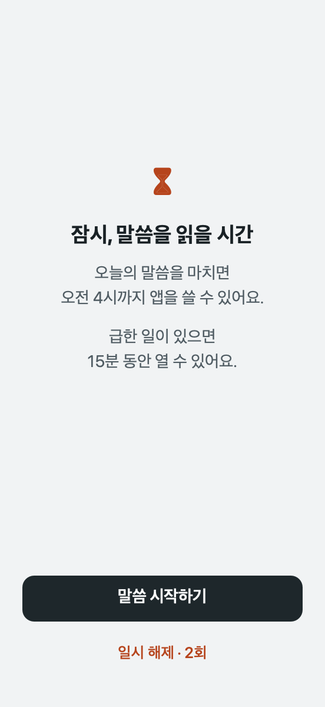
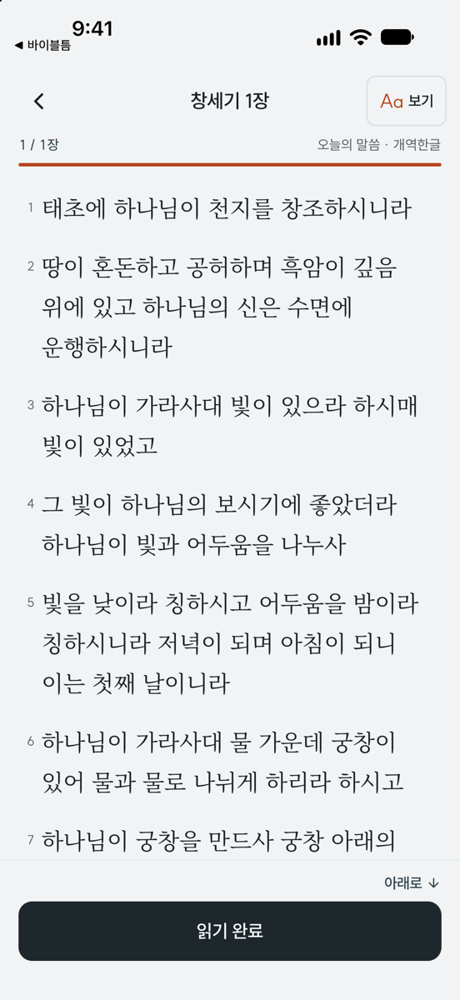
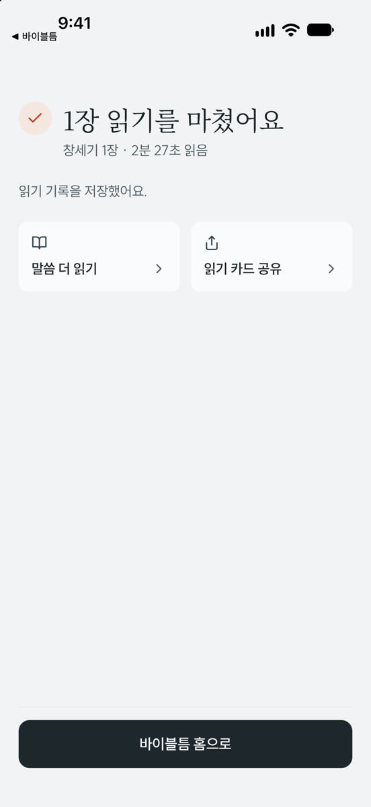

앱을 열기 전,
말씀 먼저.
인스타그램이나 유튜브를 잠시 멈추고
말씀을 읽거나 필사해요.
오늘 읽은 한 장부터 나만의 통독 기록이 쌓여요.



말씀부터 읽는 하루
잠글 앱 고르기
설정에서 잠시 멈출 앱을 골라요. 급할 때는 15분 일시 해제를 쓸 수 있어요.
읽거나 필사하기
잠긴 앱을 열면 말씀으로 이어져요. 오늘 분량을 천천히 읽거나 직접 써 봐요.
일상으로 돌아가기
말씀을 마치면 고른 앱이 다시 열려요. 읽은 말씀은 기록에 남고, 카드로 공유할 수 있어요.
개역한글 · KJV · WEB · BSB는 인터넷 없이 읽을 수 있어요.